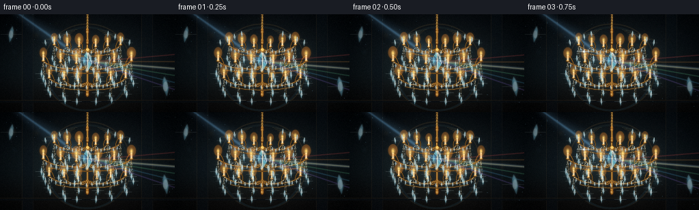
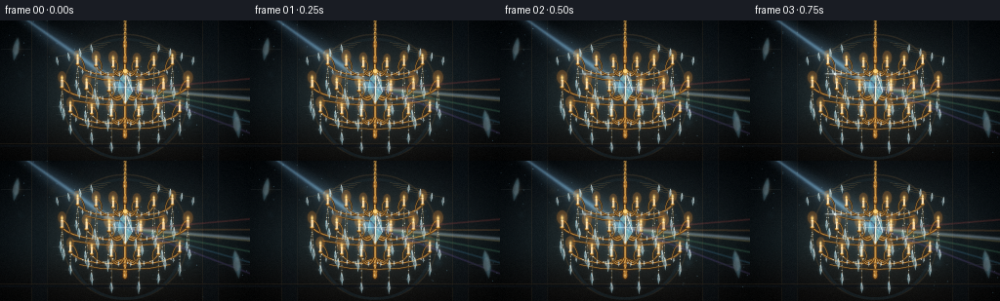
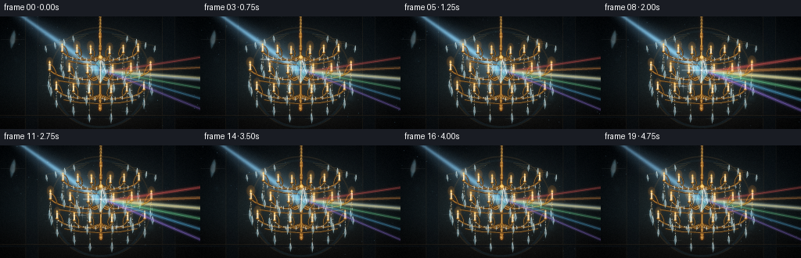
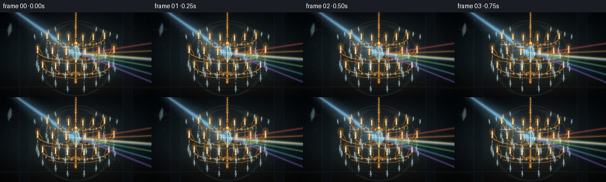
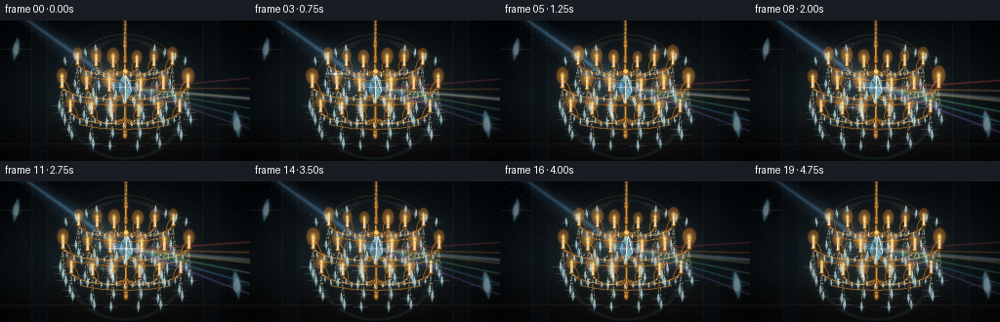
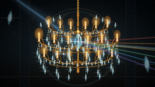
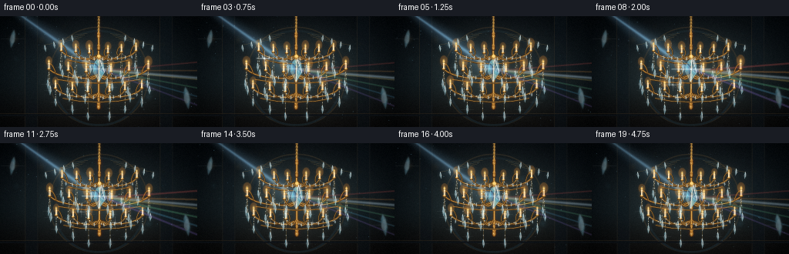
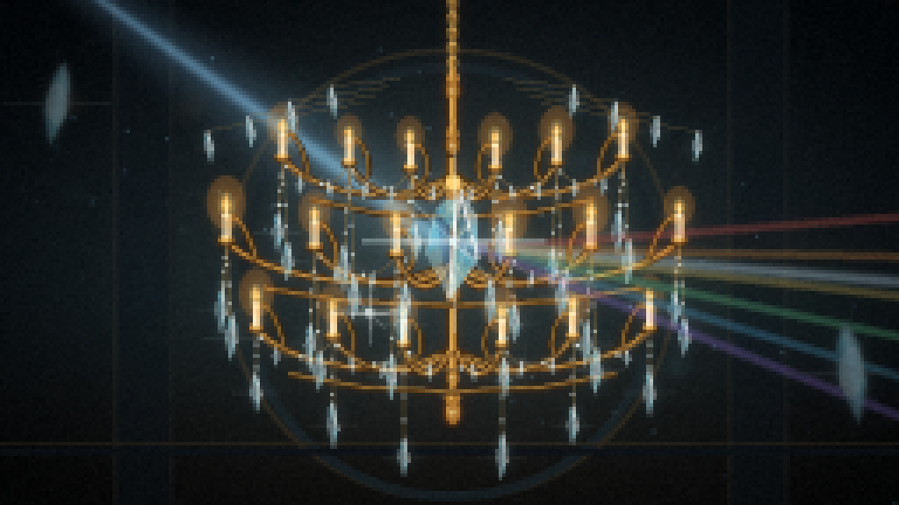
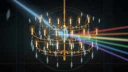

CODING AGENTS AS PIXEL WORLD MODELS
traex/DeepSeek-V4.1-Flash · phygen_087
点击播放 · 原生 RGB 像素
逐轮保存的候选
回放视频、检查图与代码变化。
每份候选均可单独播放。实际图片检查记录在下方工具轨迹中。
候选 01播放与检查图
点击播放 · 原生 RGB 像素


展开代码变化
--- 上一保存版本
+++ 本次保存版本
@@ -0,0 +1,555 @@
+from __future__ import annotations
+
+import math
+from pathlib import Path
+
+import cv2
+import numpy as np
+from PIL import Image, ImageDraw, ImageFilter
+
+import artifact_io
+
+
+ROOT = Path(__file__).resolve().parent
+WIDTH = 256
+HEIGHT = 144
+FRAMES = 20
+FPS = 4.0
+SS = 4
+CW = WIDTH * SS
+CH = HEIGHT * SS
+
+GOLD_DARK = (45, 27, 9, 255)
+GOLD = (153, 101, 34, 255)
+GOLD_LIGHT = (245, 194, 98, 255)
+GOLD_HOT = (255, 230, 160, 255)
+IVORY = (255, 226, 174, 255)
+
+
+def clamp01(value):
+ return np.clip(value, 0.0, 1.0)
+
+
+def smoothstep(edge0, edge1, value):
+ t = clamp01((value - edge0) / (edge1 - edge0))
+ return t * t * (3.0 - 2.0 * t)
+
+
+def cubic_bezier(p0, p1, p2, p3, count=28):
+ t = np.linspace(0.0, 1.0, count, dtype=np.float32)[:, None]
+ omt = 1.0 - t
+ points = (
+ omt**3 * np.asarray(p0)
+ + 3.0 * omt**2 * t * np.asarray(p1)
+ + 3.0 * omt * t**2 * np.asarray(p2)
+ + t**3 * np.asarray(p3)
+ )
+ return [(float(x), float(y)) for x, y in points]
+
+
+def rotated_points(cx, cy, width, height, angle):
+ base = np.asarray(
+ [
+ (0.0, -0.52),
+ (0.28, -0.29),
+ (0.36, 0.12),
+ (0.0, 0.52),
+ (-0.36, 0.12),
+ (-0.28, -0.29),
+ ],
+ dtype=np.float32,
+ )
+ base[:, 0] *= width
+ base[:, 1] *= height
+ ca, sa = math.cos(angle), math.sin(angle)
+ rot = np.asarray(((ca, -sa), (sa, ca)), dtype=np.float32)
+ points = base @ rot.T
+ points[:, 0] += cx
+ points[:, 1] += cy
+ return [tuple(map(float, p)) for p in points]
+
+
+def draw_soft_circle(layer, x, y, radius, color, alpha=255):
+ rgba = (*color[:3], int(alpha))
+ draw = ImageDraw.Draw(layer, "RGBA")
+ draw.ellipse((x - radius, y - radius, x + radius, y + radius), fill=rgba)
+
+
+def draw_gold_line(draw, points, width=4, bright=1.0):
+ if len(points) < 2:
+ return
+ draw.line(points, fill=GOLD_DARK, width=width + 5, joint="curve")
+ base = tuple(int(c * bright) for c in GOLD[:3]) + (255,)
+ draw.line(points, fill=base, width=width, joint="curve")
+ shifted = [(x - width * 0.16, y - width * 0.25) for x, y in points]
+ highlight = tuple(int(c * bright) for c in GOLD_LIGHT[:3]) + (255,)
+ draw.line(shifted, fill=highlight, width=max(1, width // 3), joint="curve")
+
+
+def draw_chain(draw, points, spacing=13, bead_scale=1.0):
+ draw.line(points, fill=(116, 92, 48, 180), width=2)
+ for index in range(2, len(points) - 1, spacing):
+ x, y = points[index]
+ r = 2.5 * bead_scale
+ draw.ellipse((x - r, y - r, x + r, y + r), fill=(213, 236, 231, 190))
+ draw.ellipse((x - r * 0.35, y - r * 0.55, x + r * 0.55, y + r * 0.3), fill=(255, 255, 245, 225))
+
+
+def draw_crystal(overlay, glow, x, y, width, height, angle=0.0, tint=(117, 214, 242), alpha=180, flare=1.0):
+ points = rotated_points(x, y, width, height, angle)
+ draw = ImageDraw.Draw(overlay, "RGBA")
+ draw.polygon(points, fill=(*tint, int(alpha * 0.64)), outline=(212, 251, 255, 210))
+
+ p = np.asarray(points)
+ top = tuple(p[0])
+ left = tuple(p[1])
+ right = tuple(p[2])
+ bottom = tuple(p[3])
+ lower_left = tuple(p[4])
+ lower_right = tuple(p[5])
+ center = (x, y - height * 0.02)
+ draw.polygon((top, left, center), fill=(228, 253, 255, int(alpha * 0.34)))
+ draw.polygon((top, right, center), fill=(45, 141, 191, int(alpha * 0.29)))
+ draw.polygon((center, lower_left, bottom), fill=(171, 237, 249, int(alpha * 0.27)))
+ draw.polygon((center, lower_right, bottom), fill=(52, 116, 180, int(alpha * 0.27)))
+ draw.line((top, center, bottom), fill=(248, 255, 255, 165), width=2)
+ draw.line((left, center, right), fill=(231, 252, 255, 95), width=1)
+ draw.line((top, right), fill=(255, 255, 255, 190), width=2)
+ draw.line((left, bottom), fill=(164, 237, 255, 120), width=1)
+
+ gd = ImageDraw.Draw(glow, "RGBA")
+ if flare > 0.03:
+ gd.polygon(points, fill=(*tint, int(28 + 95 * flare)))
+ length = max(width, height) * (0.45 + 0.55 * flare)
+ gd.line(((x - length, y), (x + length, y)), fill=(225, 253, 255, int(110 * flare)), width=2)
+ gd.line(((x, y - length), (x, y + length)), fill=(177, 238, 255, int(90 * flare)), width=1)
+ gd.ellipse((x - width * 0.32, y - height * 0.25, x + width * 0.32, y + height * 0.25),
+ fill=(230, 255, 255, int(55 + 80 * flare)))
+
+
+def draw_candle(draw, glow, x, y, t, scale=1.0):
+ w = 13 * scale
+ h = 33 * scale
+ cup_y = y
+ draw.ellipse((x - w * 0.9, cup_y - 4, x + w * 0.9, cup_y + 8), fill=GOLD_DARK)
+ draw.ellipse((x - w * 0.72, cup_y - 5, x + w * 0.72, cup_y + 4), fill=GOLD)
+ draw.ellipse((x - w * 0.45, cup_y - 4, x + w * 0.35, cup_y + 1), fill=GOLD_LIGHT)
+
+ candle_top = cup_y - h
+ draw.rounded_rectangle(
+ (x - w * 0.38, candle_top, x + w * 0.38, cup_y - 2),
+ radius=max(1, int(3 * scale)),
+ fill=(235, 201, 146, 255),
+ )
+ draw.rectangle((x - w * 0.28, candle_top + 2, x - w * 0.05, cup_y - 3), fill=(255, 239, 196, 255))
+ draw.ellipse((x - w * 0.38, candle_top - 3, x + w * 0.38, candle_top + 4), fill=(255, 233, 185, 255))
+ draw.ellipse((x - w * 0.28, candle_top - 1, x + w * 0.22, candle_top + 2), fill=(255, 251, 222, 255))
+
+ flicker = 0.88 + 0.12 * math.sin(t * 31.0 + x * 0.017)
+ flame_h = (20 + 3 * math.sin(t * 23.0 + x * 0.03)) * scale * flicker
+ flame_w = 6.4 * scale
+ fy = candle_top - 5
+ draw.polygon(
+ ((x, fy - flame_h), (x + flame_w, fy - flame_h * 0.35), (x + flame_w * 0.38, fy + 2),
+ (x - flame_w * 0.48, fy + 1), (x - flame_w, fy - flame_h * 0.42)),
+ fill=(255, 157, 45, 220),
+ )
+ draw.polygon(
+ ((x, fy - flame_h * 0.7), (x + flame_w * 0.4, fy - flame_h * 0.26),
+ (x, fy + 1), (x - flame_w * 0.35, fy - flame_h * 0.3)),
+ fill=(255, 245, 180, 255),
+ )
+
+ gd = ImageDraw.Draw(glow, "RGBA")
+ glow_r = 28 * scale * flicker
+ gd.ellipse((x - glow_r, fy - flame_h - glow_r, x + glow_r, fy + glow_r),
+ fill=(255, 146, 42, int(45 + 22 * flicker)))
+ gd.ellipse((x - glow_r * 0.38, fy - flame_h * 0.7 - glow_r * 0.38,
+ x + glow_r * 0.38, fy + glow_r * 0.38),
+ fill=(255, 218, 117, int(70 + 35 * flicker)))
+
+
+def draw_finial(draw, x, y, scale=1.0):
+ draw.ellipse((x - 9 * scale, y - 14 * scale, x + 9 * scale, y + 14 * scale), fill=GOLD_DARK)
+ draw.ellipse((x - 6 * scale, y - 11 * scale, x + 6 * scale, y + 11 * scale), fill=GOLD)
+ draw.ellipse((x - 3 * scale, y - 7 * scale, x + 2 * scale, y + 3 * scale), fill=GOLD_HOT)
+ draw.polygon(((x, y - 30 * scale), (x + 7 * scale, y - 13 * scale),
+ (x, y + 2 * scale), (x - 7 * scale, y - 13 * scale)), fill=GOLD)
+ draw.line(((x, y - 28 * scale), (x - 2 * scale, y - 12 * scale)), fill=GOLD_LIGHT, width=2)
+
+
+def background(t):
+ yy, xx = np.mgrid[0:CH, 0:CW].astype(np.float32)
+ xn = xx / (CW - 1)
+ yn = yy / (CH - 1)
+
+ top = np.asarray((4.0, 8.0, 13.0), dtype=np.float32)
+ mid = np.asarray((10.0, 18.0, 23.0), dtype=np.float32)
+ bottom = np.asarray((13.0, 10.0, 9.0), dtype=np.float32)
+ blend_mid = smoothstep(0.0, 0.7, yn)[..., None]
+ image = top * (1.0 - blend_mid) + mid * blend_mid
+ blend_bottom = smoothstep(0.55, 1.0, yn)[..., None]
+ image = image * (1.0 - blend_bottom) + bottom * blend_bottom
+
+ cx = CW * 0.5
+ cy = CH * 0.47
+ radial = np.sqrt(((xx - cx) / (CW * 0.62)) ** 2 + ((yy - cy) / (CH * 0.74)) ** 2)
+ central = np.exp(-(radial**2) * 2.4)
+ image += central[..., None] * np.asarray((16.0, 17.0, 13.0), dtype=np.float32)
+
+ vignette = np.clip(1.2 - 1.05 * np.sqrt(((xx - cx) / (CW * 0.72)) ** 2 + ((yy - cy) / (CH * 0.8)) ** 2), 0.16, 1.0)
+ image *= vignette[..., None]
+ image += np.random.default_rng(17).normal(0.0, 1.2, (CH, CW, 1)).astype(np.float32)
+ base = Image.fromarray(np.uint8(np.clip(image, 0, 255)), "RGB").convert("RGBA")
+
+ deco = Image.new("RGBA", (CW, CH), (0, 0, 0, 0))
+ d = ImageDraw.Draw(deco, "RGBA")
+ arch_shift = 2.5 * math.sin(t * math.tau * 0.15)
+ ax = CW * 0.5 + arch_shift
+ d.rounded_rectangle((ax - 258, 55, ax + 258, 570), radius=250, outline=(63, 50, 31, 95), width=6)
+ d.rounded_rectangle((ax - 239, 72, ax + 239, 570), radius=232, outline=(17, 24, 27, 220), width=11)
+ for side in (-1, 1):
+ px = ax + side * 350
+ d.rectangle((px - 35, 0, px + 35, CH), fill=(7, 12, 16, 125))
+ d.line((px - 32, 0, px - 32, CH), fill=(67, 54, 34, 65), width=3)
+ d.line((px + 32, 0, px + 32, CH), fill=(35, 32, 27, 85), width=3)
+ d.line((0, 505, CW, 505), fill=(73, 57, 36, 75), width=3)
+ d.line((0, 514, CW, 514), fill=(7, 10, 13, 220), width=8)
+ base = Image.alpha_composite(base, deco)
+
+ bokeh = Image.new("RGBA", (CW, CH), (0, 0, 0, 0))
+ rng = np.random.default_rng(39)
+ for _ in range(23):
+ x = rng.uniform(40, CW - 40)
+ y = rng.uniform(20, CH * 0.82)
+ r = rng.uniform(5, 19)
+ warm = rng.random() < 0.7
+ color = (255, 174, 75) if warm else (96, 190, 224)
+ alpha = int(rng.uniform(10, 34))
+ draw_soft_circle(bokeh, x, y, r, color, alpha)
+ bokeh = bokeh.filter(ImageFilter.GaussianBlur(11))
+ return Image.alpha_composite(base, bokeh)
+
+
+def add_beam(base, cx, prism_y, t):
+ arr = np.asarray(base.convert("RGB"), dtype=np.float32)
+ yy, xx = np.mgrid[0:CH, 0:CW].astype(np.float32)
+ p0 = np.asarray((15.0, -70.0), dtype=np.float32)
+ p1 = np.asarray((cx - 5.0, prism_y), dtype=np.float32)
+ direction = p1 - p0
+ length = np.linalg.norm(direction)
+ unit = direction / length
+ normal = np.asarray((-unit[1], unit[0]), dtype=np.float32)
+ along = ((xx - p0[0]) * unit[0] + (yy - p0[1]) * unit[1]) / length
+ perp = np.abs((xx - p0[0]) * normal[0] + (yy - p0[1]) * normal[1])
+ taper = smoothstep(0.0, 0.06, along) * (1.0 - smoothstep(0.96, 1.08, along))
+ width = 15.0 + 57.0 * np.clip(along, 0.0, 1.0)
+ pulse = 0.88 + 0.12 * math.sin(t * math.tau * 0.7)
+ halo = np.exp(-((perp / width) ** 2) * 1.3)
+ core = np.exp(-((perp / (width * 0.19 + 2.0)) ** 2) * 1.8)
+ streak = (halo * 0.22 + core * 0.48) * taper * pulse
+ beam_color = np.asarray((0.42, 0.70, 0.92), dtype=np.float32)
+ arr += streak[..., None] * beam_color * 155.0
+
+ # A small forward beam leaves the prism along the same optical direction.
+ p2 = np.asarray((CW + 60.0, prism_y + 48.0), dtype=np.float32)
+ fdir = p2 - p1
+ flen = np.linalg.norm(fdir)
+ funit = fdir / flen
+ fnormal = np.asarray((-funit[1], funit[0]), dtype=np.float32)
+ falong = ((xx - p1[0]) * funit[0] + (yy - p1[1]) * funit[1]) / flen
+ fperp = np.abs((xx - p1[0]) * fnormal[0] + (yy - p1[1]) * fnormal[1])
+ fmask = (falong > 0.0).astype(np.float32) * (1.0 - smoothstep(0.85, 1.1, falong))
+ forward = np.exp(-((fperp / 9.0) ** 2) * 2.0) * fmask * (0.25 + 0.16 * pulse)
+ arr += forward[..., None] * np.asarray((0.75, 0.90, 1.0), dtype=np.float32) * 165.0
+
+ arr = np.clip(arr, 0, 255)
+ return Image.fromarray(arr.astype(np.uint8), "RGB").convert("RGBA")
+
+
+def draw_refraction(glow, core, cx, cy, t, energy):
+ gd = ImageDraw.Draw(glow, "RGBA")
+ cd = ImageDraw.Draw(core, "RGBA")
+ colors = (
+ (255, 87, 83),
+ (255, 155, 66),
+ (255, 225, 102),
+ (112, 238, 163),
+ (85, 194, 255),
+ (157, 119, 255),
+ )
+ sway = math.sin(t * math.tau * 0.32) * 13.0
+ for i, color in enumerate(colors):
+ fan = (i - 2.5) / 2.5
+ end_y = cy + 67.0 + fan * 112.0 + sway * (1.0 + 0.12 * i)
+ end_x = CW + 40
+ width_glow = int(7 + 3 * energy)
+ gd.line(((cx + 24, cy + 2), (end_x, end_y)), fill=(*color, int(22 + 25 * energy)), width=width_glow)
+ cd.line(((cx + 27, cy + 2), (end_x, end_y)), fill=(*color, int(30 + 36 * energy)), width=2)
+
+
+def draw_sparkle(glow, core, x, y, size, color=(240, 254, 255), strength=1.0):
+ if strength <= 0.02:
+ return
+ gd = ImageDraw.Draw(glow, "RGBA")
+ cd = ImageDraw.Draw(core, "RGBA")
+ s = max(1.0, size)
+ gd.line(((x - s, y), (x + s, y)), fill=(*color, int(150 * strength)), width=3)
+ gd.line(((x, y - s), (x, y + s)), fill=(*color, int(120 * strength)), width=2)
+ gd.line(((x - s * 0.45, y - s * 0.45), (x + s * 0.45, y + s * 0.45)),
+ fill=(*color, int(85 * strength)), width=2)
+ cd.line(((x - s * 0.55, y), (x + s * 0.55, y)), fill=(255, 255, 255, int(225 * strength)), width=2)
+ cd.line(((x, y - s * 0.55), (x, y + s * 0.55)), fill=(255, 255, 255, int(195 * strength)), width=1)
+ cd.ellipse((x - 5, y - 5, x + 5, y + 5), fill=(*color, int(210 * strength)))
+
+
+def draw_chandelier(t, cx, prism_y):
+ main = Image.new("RGBA", (CW, CH), (0, 0, 0, 0))
+ overlay = Image.new("RGBA", (CW, CH), (0, 0, 0, 0))
+ glow = Image.new("RGBA", (CW, CH), (0, 0, 0, 0))
+ core = Image.new("RGBA", (CW, CH), (0, 0, 0, 0))
+ d = ImageDraw.Draw(main, "RGBA")
+
+ sway = 2.5 * math.sin(t * math.tau * 0.22)
+ cx += sway
+
+ # Suspension chain and central stem.
+ draw_gold_line(d, [(cx, -20), (cx + 1, 30), (cx - 1, 75), (cx, 112)], width=5)
+ for y in range(4, 82, 17):
+ d.ellipse((cx - 6, y - 10, cx + 6, y + 9), outline=(113, 85, 41, 210), width=3)
+ d.arc((cx - 5, y - 8, cx + 5, y + 7), 200, 340, fill=GOLD_LIGHT, width=2)
+ draw_finial(d, cx, 103, 1.05)
+ draw_gold_line(d, [(cx, 113), (cx - 1, 175), (cx + 1, 260), (cx, 370), (cx, 452)], width=8)
+ for y, scale in ((165, 1.0), (236, 1.18), (335, 1.05), (431, 0.9), (470, 1.25)):
+ draw_finial(d, cx, y, scale)
+
+ tiers = (
+ (201, 194, 160, 0.88),
+ (302, 258, 255, 1.0),
+ (400, 224, 355, 0.92),
+ )
+ endpoints = []
+ for tier_index, (hub_y, radius, end_y, scale) in enumerate(tiers):
+ tier_points = []
+ for side in (-1, 1):
+ for frac in (1.0, 0.61, 0.25):
+ end_x = cx + side * radius * frac
+ yy = end_y + (1.0 - frac) * (16.0 + tier_index * 4.0)
+ p0 = (cx + side * 5, hub_y)
+ p1 = (cx + side * radius * frac * 0.32, hub_y + 43)
+ p2 = (cx + side * radius * frac * 0.93, yy + 55)
+ p3 = (end_x, yy + 16)
+ curve = cubic_bezier(p0, p1, p2, p3, 34)
+ draw_gold_line(d, curve, width=max(3, int(5 * scale)), bright=0.96)
+
+ curl_start = curve[-9]
+ curl = cubic_bezier(
+ curl_start,
+ (end_x - side * 34, yy + 31),
+ (end_x - side * 12, yy - 22),
+ (end_x - side * 2, yy - 3),
+ 16,
+ )
+ draw_gold_line(d, curl, width=max(2, int(3 * scale)), bright=0.82)
+
+ cup_y = yy + 18
+ draw_candle(d, glow, end_x, cup_y, t, scale=scale)
+ tier_points.append((end_x, cup_y, scale, tier_index))
+ endpoints.append(tier_points)
+
+ ring = [
+ (cx - radius * 0.83, hub_y + 26),
+ (cx - radius * 0.46, hub_y + 41),
+ (cx, hub_y + 46),
+ (cx + radius * 0.46, hub_y + 41),
+ (cx + radius * 0.83, hub_y + 26),
+ ]
+ draw_gold_line(d, ring, width=max(3, int(4 * scale)), bright=0.8)
+
+ # Crystal swags between neighboring candle arms.
+ for tier_index, pts in enumerate(endpoints):
+ sorted_pts = sorted(pts, key=lambda item: item[0])
+ for left, right in zip(sorted_pts[:-1], sorted_pts[1:]):
+ x0, y0 = left[0], left[1] + 5
+ x1, y1 = right[0], right[1] + 5
+ span = x1 - x0
+ if span < 45:
+ continue
+ sag = 28 + 0.07 * span
+ chain = cubic_bezier((x0, y0), (x0 + span * 0.28, y0 + sag),
+ (x1 - span * 0.28, y1 + sag), (x1, y1), 30)
+ draw_chain(d, chain, spacing=11, bead_scale=0.7 + 0.12 * tier_index)
+ for bead_index in range(5, len(chain) - 4, 8):
+ bx, by = chain[bead_index]
+ pulse = 0.5 + 0.5 * math.sin(t * math.tau * 1.4 + bx * 0.041 + tier_index)
+ draw_crystal(overlay, glow, bx, by + 9, 8, 22, angle=0.12 * math.sin(bx),
+ tint=(115, 209, 235), alpha=150, flare=0.2 + 0.25 * pulse)
+
+ # Long pendant chains make the silhouette read as a chandelier.
+ for tier_index, pts in enumerate(endpoints):
+ for arm_index, (x, cup_y, scale, _) in enumerate(pts):
+ count = 3 if tier_index < 2 else 2
+ for chain_index in range(count):
+ offset = (chain_index - (count - 1) * 0.5) * 11.0
+ length = (63 + 31 * ((arm_index + chain_index) % 3)) * (1.0 - 0.09 * tier_index)
+ top_y = cup_y + 6
+ chain_points = [(x + offset * q / 8, top_y + length * q / 8) for q in range(9)]
+ draw_chain(d, chain_points, spacing=2, bead_scale=0.65)
+ drop_y = top_y + length + 14
+ pulse = 0.5 + 0.5 * math.sin(t * math.tau * 1.1 + x * 0.033 + chain_index)
+ draw_crystal(
+ overlay,
+ glow,
+ x + offset,
+ drop_y,
+ 13 + 2 * (chain_index == 1),
+ 38 + 7 * ((arm_index + tier_index) % 2),
+ angle=0.04 * math.sin(x + t * 3),
+ tint=(96, 203, 236),
+ alpha=178,
+ flare=0.28 + 0.35 * pulse,
+ )
+
+ # Outer crown crystals and short upper sprays.
+ for side in (-1, 1):
+ for k in range(4):
+ x = cx + side * (120 + k * 42)
+ y = 98 + k * 17
+ draw_chain(d, [(cx + side * (60 + k * 14), 90 + k * 9), (x, y)], spacing=3, bead_scale=0.6)
+ draw_crystal(overlay, glow, x, y + 18, 11, 34, angle=side * 0.12, tint=(131, 222, 240),
+ alpha=175, flare=0.32)
+
+ # Central faceted prism, the optical heart of the scene.
+ rot = 0.11 * math.sin(t * math.tau * 0.28)
+ prism_x = cx + 1.0
+ prism_w = 72.0
+ prism_h = 112.0
+ points = rotated_points(prism_x, prism_y, prism_w, prism_h, rot)
+ pd = ImageDraw.Draw(overlay, "RGBA")
+ pd.polygon(points, fill=(93, 190, 221, 175), outline=(218, 252, 255, 240))
+ p = np.asarray(points)
+ top, left, right, bottom, lower_left, lower_right = p
+ center = np.asarray((prism_x, prism_y))
+ facets = (
+ ((top, left, center), (222, 252, 255, 104)),
+ ((top, right, center), (56, 146, 195, 88)),
+ ((left, lower_left, center), (151, 235, 246, 76)),
+ ((right, lower_right, center), (42, 105, 175, 82)),
+ ((center, lower_left, bottom), (197, 249, 255, 78)),
+ ((center, lower_right, bottom), (63, 125, 192, 86)),
+ )
+ for triangle, fill in facets:
+ pd.polygon(tuple(map(tuple, triangle)), fill=fill)
+ pd.line((tuple(top), tuple(center), tuple(bottom)), fill=(250, 255, 255, 225), width=3)
+ pd.line((tuple(left), tuple(center), tuple(right)), fill=(231, 253, 255, 145), width=2)
+ pd.line((tuple(top), tuple(right)), fill=(255, 255, 255, 240), width=3)
+ pd.line((tuple(left), tuple(bottom)), fill=(183, 243, 255, 150), width=2)
+ pd.polygon(((prism_x - 8, prism_y - 67), (prism_x + 8, prism_y - 67),
+ (prism_x + 5, prism_y - 52), (prism_x - 5, prism_y - 52)), fill=GOLD)
+ pd.ellipse((prism_x - 9, prism_y - 77, prism_x + 9, prism_y - 62), fill=GOLD_LIGHT)
+
+ energy = 0.35 + 0.65 * math.exp(-((t - 0.48) / 0.16) ** 2)
+ draw_refraction(glow, core, prism_x, prism_y, t, energy)
+ star_strength = 0.42 + 1.3 * math.exp(-((t - 0.48) / 0.115) ** 2)
+ draw_sparkle(glow, core, prism_x, prism_y - 3, 53 + 22 * star_strength,
+ color=(221, 250, 255), strength=min(1.0, star_strength))
+
+ # Small glints sweep down the chandelier as the beam settles.
+ for idx, (x, y) in enumerate(((cx - 165, 219), (cx + 196, 287), (cx - 95, 356), (cx + 83, 414))):
+ phase = 0.17 + idx * 0.16
+ strength = math.exp(-((t - phase) / 0.075) ** 2)
+ draw_sparkle(glow, core, x, y, 26 + 15 * strength, color=(235, 253, 255), strength=strength)
+
+ # A few foreground crystals are softened to suggest shallow depth of field.
+ fg = Image.new("RGBA", (CW, CH), (0, 0, 0, 0))
+ for x, y, w, h in ((65, 118, 35, 95), (970, 425, 43, 114)):
+ draw_crystal(fg, glow, x, y, w, h, angle=0.18 if x < CW / 2 else -0.14,
+ tint=(104, 193, 224), alpha=88, flare=0.35)
+ fg = fg.filter(ImageFilter.GaussianBlur(5))
+
+ return main, overlay, glow, core, fg
+
+
+def add_dust(base, cx, prism_y, t):
+ arr = np.asarray(base.convert("RGB"), dtype=np.float32)
+ yy, xx = np.mgrid[0:CH, 0:CW].astype(np.float32)
+ rng = np.random.default_rng(112)
+ dust = np.zeros((CH, CW), dtype=np.float32)
+ for _ in range(65):
+ x0 = rng.uniform(-30, CW + 20)
+ y0 = rng.uniform(-20, CH + 20)
+ speed = rng.uniform(0.25, 0.8)
+ drift = rng.uniform(8, 32)
+ x = (x0 + drift * t + 17 * math.sin(t * math.tau * rng.uniform(0.2, 0.5) + y0)) % CW
+ y = (y0 + speed * t * CH) % CH
+ dx = np.abs(xx - x)
+ dy = np.abs(yy - y)
+ val = np.exp(-(dx * dx + dy * dy) / 2.5) * rng.uniform(0.25, 0.75)
+ dust += val.astype(np.float32)
+ # Keep most particles inside the visible light shaft.
+ beam_center = (xx - cx) * 0.50 + prism_y - (yy * 0.93)
+ dust *= np.exp(-((beam_center - 40.0) / 190.0) ** 2)
+ arr += dust[..., None] * np.asarray((110.0, 180.0, 215.0), dtype=np.float32)
+ return Image.fromarray(np.uint8(np.clip(arr, 0, 255)), "RGB").convert("RGBA")
+
+
+def post_process(image, frame_index):
+ rgb = np.asarray(image.convert("RGB"), dtype=np.float32) / 255.0
+ # Soft cinematic contrast and a gentle teal/amber split-tone.
+ rgb = np.power(np.clip(rgb, 0.0, 1.0), 0.92)
+ shadows = np.clip(1.0 - rgb * 2.0, 0.0, 1.0)
+ highlights = np.clip(rgb * 1.6 - 0.35, 0.0, 1.0)
+ rgb += shadows * np.asarray((0.004, 0.010, 0.014), dtype=np.float32)
+ rgb += highlights * np.asarray((0.020, 0.011, 0.002), dtype=np.float32)
+
+ small = cv2.resize(np.uint8(np.clip(rgb * 255.0, 0, 255)), (WIDTH, HEIGHT), interpolation=cv2.INTER_AREA)
+ arr = small.astype(np.float32)
+ yy, xx = np.mgrid[0:HEIGHT, 0:WIDTH].astype(np.float32)
+ nx = (xx - WIDTH * 0.5) / (WIDTH * 0.5)
+ ny = (yy - HEIGHT * 0.5) / (HEIGHT * 0.5)
+ vig = np.clip(1.10 - 0.24 * (nx * nx * 0.8 + ny * ny), 0.66, 1.0)
+ arr *= vig[..., None]
+ grain = np.random.default_rng(500 + frame_index).normal(0.0, 1.35, (HEIGHT, WIDTH, 1))
+ arr = np.clip(arr + grain, 0, 255)
+ return arr.astype(np.uint8)
+
+
+def render_frame(frame_index):
+ t = frame_index / (FRAMES - 1)
+ cx = CW * 0.5 + 4.0 * math.sin(t * math.tau * 0.16)
+ prism_y = CH * 0.48 + 2.0 * math.sin(t * math.tau * 0.21 + 0.4)
+
+ image = background(t)
+ image = add_beam(image, cx, prism_y, t)
+ main, overlay, glow, core, fg = draw_chandelier(t, cx, prism_y)
+ image = Image.alpha_composite(image, main)
+
+ # Add the refracted fan behind the faceted surfaces.
+ glow_blur = glow.filter(ImageFilter.GaussianBlur(13))
+ image = Image.alpha_composite(image, glow_blur)
+ image = Image.alpha_composite(image, overlay)
+ image = Image.alpha_composite(image, glow)
+ image = Image.alpha_composite(image, core)
+ image = Image.alpha_composite(image, fg)
+
+ image = add_dust(image, cx, prism_y, t)
+
+ # Final global bloom.
+ rgb = np.asarray(image.convert("RGB"), dtype=np.float32)
+ bloom_source = np.clip((rgb - 95.0) * 1.2, 0, 255).astype(np.uint8)
+ bloom = cv2.GaussianBlur(bloom_source, (0, 0), 9.0).astype(np.float32)
+ rgb = 255.0 - (255.0 - rgb) * (255.0 - bloom * 0.52) / 255.0
+ image = Image.fromarray(np.uint8(np.clip(rgb, 0, 255)), "RGB")
+ return post_process(image, frame_index)
+
+
+def main():
+ frames = np.stack([render_frame(index) for index in range(FRAMES)], axis=0)
+ assert frames.shape == (FRAMES, HEIGHT, WIDTH, 3)
+ assert frames.dtype == np.uint8
+ artifact_io.save(frames, ROOT)
+ print(f"Saved {len(frames)} RGB frames to {ROOT}")
+
+
+if __name__ == "__main__":
+ main()
候选 02播放与检查图
点击播放 · 原生 RGB 像素


展开代码变化
--- 上一保存版本
+++ 本次保存版本
@@ -119,17 +119,17 @@
gd = ImageDraw.Draw(glow, "RGBA")
if flare > 0.03:
- gd.polygon(points, fill=(*tint, int(28 + 95 * flare)))
+ gd.polygon(points, fill=(*tint, int(16 + 52 * flare)))
length = max(width, height) * (0.45 + 0.55 * flare)
- gd.line(((x - length, y), (x + length, y)), fill=(225, 253, 255, int(110 * flare)), width=2)
- gd.line(((x, y - length), (x, y + length)), fill=(177, 238, 255, int(90 * flare)), width=1)
+ gd.line(((x - length, y), (x + length, y)), fill=(225, 253, 255, int(55 * flare)), width=2)
+ gd.line(((x, y - length), (x, y + length)), fill=(177, 238, 255, int(40 * flare)), width=1)
gd.ellipse((x - width * 0.32, y - height * 0.25, x + width * 0.32, y + height * 0.25),
- fill=(230, 255, 255, int(55 + 80 * flare)))
+ fill=(230, 255, 255, int(25 + 45 * flare)))
def draw_candle(draw, glow, x, y, t, scale=1.0):
- w = 13 * scale
- h = 33 * scale
+ w = 11 * scale
+ h = 28 * scale
cup_y = y
draw.ellipse((x - w * 0.9, cup_y - 4, x + w * 0.9, cup_y + 8), fill=GOLD_DARK)
draw.ellipse((x - w * 0.72, cup_y - 5, x + w * 0.72, cup_y + 4), fill=GOLD)
@@ -146,8 +146,8 @@
draw.ellipse((x - w * 0.28, candle_top - 1, x + w * 0.22, candle_top + 2), fill=(255, 251, 222, 255))
flicker = 0.88 + 0.12 * math.sin(t * 31.0 + x * 0.017)
- flame_h = (20 + 3 * math.sin(t * 23.0 + x * 0.03)) * scale * flicker
- flame_w = 6.4 * scale
+ flame_h = (16 + 2.5 * math.sin(t * 23.0 + x * 0.03)) * scale * flicker
+ flame_w = 5.2 * scale
fy = candle_top - 5
draw.polygon(
((x, fy - flame_h), (x + flame_w, fy - flame_h * 0.35), (x + flame_w * 0.38, fy + 2),
@@ -161,12 +161,12 @@
)
gd = ImageDraw.Draw(glow, "RGBA")
- glow_r = 28 * scale * flicker
+ glow_r = 22 * scale * flicker
gd.ellipse((x - glow_r, fy - flame_h - glow_r, x + glow_r, fy + glow_r),
- fill=(255, 146, 42, int(45 + 22 * flicker)))
+ fill=(255, 146, 42, int(30 + 15 * flicker)))
gd.ellipse((x - glow_r * 0.38, fy - flame_h * 0.7 - glow_r * 0.38,
x + glow_r * 0.38, fy + glow_r * 0.38),
- fill=(255, 218, 117, int(70 + 35 * flicker)))
+ fill=(255, 218, 117, int(48 + 24 * flicker)))
def draw_finial(draw, x, y, scale=1.0):
@@ -195,7 +195,7 @@
cy = CH * 0.47
radial = np.sqrt(((xx - cx) / (CW * 0.62)) ** 2 + ((yy - cy) / (CH * 0.74)) ** 2)
central = np.exp(-(radial**2) * 2.4)
- image += central[..., None] * np.asarray((16.0, 17.0, 13.0), dtype=np.float32)
+ image += central[..., None] * np.asarray((22.0, 23.0, 18.0), dtype=np.float32)
vignette = np.clip(1.2 - 1.05 * np.sqrt(((xx - cx) / (CW * 0.72)) ** 2 + ((yy - cy) / (CH * 0.8)) ** 2), 0.16, 1.0)
image *= vignette[..., None]
@@ -248,8 +248,8 @@
halo = np.exp(-((perp / width) ** 2) * 1.3)
core = np.exp(-((perp / (width * 0.19 + 2.0)) ** 2) * 1.8)
streak = (halo * 0.22 + core * 0.48) * taper * pulse
- beam_color = np.asarray((0.42, 0.70, 0.92), dtype=np.float32)
- arr += streak[..., None] * beam_color * 155.0
+ beam_color = np.asarray((0.50, 0.78, 0.97), dtype=np.float32)
+ arr += streak[..., None] * beam_color * 195.0
# A small forward beam leaves the prism along the same optical direction.
p2 = np.asarray((CW + 60.0, prism_y + 48.0), dtype=np.float32)
@@ -261,7 +261,7 @@
fperp = np.abs((xx - p1[0]) * fnormal[0] + (yy - p1[1]) * fnormal[1])
fmask = (falong > 0.0).astype(np.float32) * (1.0 - smoothstep(0.85, 1.1, falong))
forward = np.exp(-((fperp / 9.0) ** 2) * 2.0) * fmask * (0.25 + 0.16 * pulse)
- arr += forward[..., None] * np.asarray((0.75, 0.90, 1.0), dtype=np.float32) * 165.0
+ arr += forward[..., None] * np.asarray((0.75, 0.90, 1.0), dtype=np.float32) * 185.0
arr = np.clip(arr, 0, 255)
return Image.fromarray(arr.astype(np.uint8), "RGB").convert("RGBA")
@@ -278,14 +278,14 @@
(85, 194, 255),
(157, 119, 255),
)
- sway = math.sin(t * math.tau * 0.32) * 13.0
+ sway = math.sin(t * math.tau * 0.32) * 9.0
for i, color in enumerate(colors):
fan = (i - 2.5) / 2.5
- end_y = cy + 67.0 + fan * 112.0 + sway * (1.0 + 0.12 * i)
+ end_y = cy + 79.0 + fan * 121.0 + sway * (1.0 + 0.12 * i)
end_x = CW + 40
- width_glow = int(7 + 3 * energy)
- gd.line(((cx + 24, cy + 2), (end_x, end_y)), fill=(*color, int(22 + 25 * energy)), width=width_glow)
- cd.line(((cx + 27, cy + 2), (end_x, end_y)), fill=(*color, int(30 + 36 * energy)), width=2)
+ width_glow = int(8 + 4 * energy)
+ gd.line(((cx + 28, cy + 5), (end_x, end_y)), fill=(*color, int(16 + 22 * energy)), width=width_glow)
+ cd.line(((cx + 29, cy + 5), (end_x, end_y)), fill=(*color, int(20 + 27 * energy)), width=2)
def draw_sparkle(glow, core, x, y, size, color=(240, 254, 255), strength=1.0):
@@ -366,32 +366,34 @@
]
draw_gold_line(d, ring, width=max(3, int(4 * scale)), bright=0.8)
- # Crystal swags between neighboring candle arms.
+ # Sparse crystal swags between the widest neighboring candle arms.
for tier_index, pts in enumerate(endpoints):
sorted_pts = sorted(pts, key=lambda item: item[0])
- for left, right in zip(sorted_pts[:-1], sorted_pts[1:]):
- x0, y0 = left[0], left[1] + 5
- x1, y1 = right[0], right[1] + 5
+ for pair_index, (left, right) in enumerate(zip(sorted_pts[:-1], sorted_pts[1:])):
+ if pair_index % 2 == 0 and tier_index == 1:
+ continue
+ x0, y0 = left[0], left[1] + 6
+ x1, y1 = right[0], right[1] + 6
span = x1 - x0
- if span < 45:
+ if span < 55:
continue
- sag = 28 + 0.07 * span
+ sag = 25 + 0.06 * span
chain = cubic_bezier((x0, y0), (x0 + span * 0.28, y0 + sag),
(x1 - span * 0.28, y1 + sag), (x1, y1), 30)
- draw_chain(d, chain, spacing=11, bead_scale=0.7 + 0.12 * tier_index)
- for bead_index in range(5, len(chain) - 4, 8):
+ draw_chain(d, chain, spacing=15, bead_scale=0.65 + 0.1 * tier_index)
+ for bead_index in range(8, len(chain) - 7, 12):
bx, by = chain[bead_index]
pulse = 0.5 + 0.5 * math.sin(t * math.tau * 1.4 + bx * 0.041 + tier_index)
- draw_crystal(overlay, glow, bx, by + 9, 8, 22, angle=0.12 * math.sin(bx),
- tint=(115, 209, 235), alpha=150, flare=0.2 + 0.25 * pulse)
+ draw_crystal(overlay, glow, bx, by + 8, 7, 18, angle=0.10 * math.sin(bx),
+ tint=(115, 209, 235), alpha=145, flare=0.10 + 0.15 * pulse)
# Long pendant chains make the silhouette read as a chandelier.
for tier_index, pts in enumerate(endpoints):
for arm_index, (x, cup_y, scale, _) in enumerate(pts):
- count = 3 if tier_index < 2 else 2
+ count = 2 if tier_index < 2 else 1
for chain_index in range(count):
offset = (chain_index - (count - 1) * 0.5) * 11.0
- length = (63 + 31 * ((arm_index + chain_index) % 3)) * (1.0 - 0.09 * tier_index)
+ length = (66 + 34 * ((arm_index + chain_index) % 3)) * (1.0 - 0.09 * tier_index)
top_y = cup_y + 6
chain_points = [(x + offset * q / 8, top_y + length * q / 8) for q in range(9)]
draw_chain(d, chain_points, spacing=2, bead_scale=0.65)
@@ -402,31 +404,31 @@
glow,
x + offset,
drop_y,
- 13 + 2 * (chain_index == 1),
- 38 + 7 * ((arm_index + tier_index) % 2),
+ 14 + 2 * (chain_index == 1),
+ 42 + 8 * ((arm_index + tier_index) % 2),
angle=0.04 * math.sin(x + t * 3),
tint=(96, 203, 236),
alpha=178,
- flare=0.28 + 0.35 * pulse,
+ flare=0.16 + 0.22 * pulse,
)
# Outer crown crystals and short upper sprays.
for side in (-1, 1):
for k in range(4):
- x = cx + side * (120 + k * 42)
+ x = cx + side * (137 + k * 47)
y = 98 + k * 17
draw_chain(d, [(cx + side * (60 + k * 14), 90 + k * 9), (x, y)], spacing=3, bead_scale=0.6)
draw_crystal(overlay, glow, x, y + 18, 11, 34, angle=side * 0.12, tint=(131, 222, 240),
- alpha=175, flare=0.32)
+ alpha=170, flare=0.16)
# Central faceted prism, the optical heart of the scene.
rot = 0.11 * math.sin(t * math.tau * 0.28)
prism_x = cx + 1.0
- prism_w = 72.0
- prism_h = 112.0
+ prism_w = 82.0
+ prism_h = 122.0
points = rotated_points(prism_x, prism_y, prism_w, prism_h, rot)
pd = ImageDraw.Draw(overlay, "RGBA")
- pd.polygon(points, fill=(93, 190, 221, 175), outline=(218, 252, 255, 240))
+ pd.polygon(points, fill=(93, 190, 221, 150), outline=(218, 252, 255, 235))
p = np.asarray(points)
top, left, right, bottom, lower_left, lower_right = p
center = np.asarray((prism_x, prism_y))
@@ -451,7 +453,7 @@
energy = 0.35 + 0.65 * math.exp(-((t - 0.48) / 0.16) ** 2)
draw_refraction(glow, core, prism_x, prism_y, t, energy)
star_strength = 0.42 + 1.3 * math.exp(-((t - 0.48) / 0.115) ** 2)
- draw_sparkle(glow, core, prism_x, prism_y - 3, 53 + 22 * star_strength,
+ draw_sparkle(glow, core, prism_x, prism_y - 3, 65 + 26 * star_strength,
color=(221, 250, 255), strength=min(1.0, star_strength))
# Small glints sweep down the chandelier as the beam settles.
@@ -496,11 +498,11 @@
def post_process(image, frame_index):
rgb = np.asarray(image.convert("RGB"), dtype=np.float32) / 255.0
# Soft cinematic contrast and a gentle teal/amber split-tone.
- rgb = np.power(np.clip(rgb, 0.0, 1.0), 0.92)
+ rgb = np.power(np.clip(rgb, 0.0, 1.0), 0.84)
shadows = np.clip(1.0 - rgb * 2.0, 0.0, 1.0)
highlights = np.clip(rgb * 1.6 - 0.35, 0.0, 1.0)
- rgb += shadows * np.asarray((0.004, 0.010, 0.014), dtype=np.float32)
- rgb += highlights * np.asarray((0.020, 0.011, 0.002), dtype=np.float32)
+ rgb += shadows * np.asarray((0.005, 0.012, 0.016), dtype=np.float32)
+ rgb += highlights * np.asarray((0.027, 0.015, 0.003), dtype=np.float32)
small = cv2.resize(np.uint8(np.clip(rgb * 255.0, 0, 255)), (WIDTH, HEIGHT), interpolation=cv2.INTER_AREA)
arr = small.astype(np.float32)
候选 03播放与检查图
点击播放 · 原生 RGB 像素


展开代码变化
--- 上一保存版本
+++ 本次保存版本
@@ -163,10 +163,10 @@
gd = ImageDraw.Draw(glow, "RGBA")
glow_r = 22 * scale * flicker
gd.ellipse((x - glow_r, fy - flame_h - glow_r, x + glow_r, fy + glow_r),
- fill=(255, 146, 42, int(30 + 15 * flicker)))
+ fill=(255, 146, 42, int(20 + 10 * flicker)))
gd.ellipse((x - glow_r * 0.38, fy - flame_h * 0.7 - glow_r * 0.38,
x + glow_r * 0.38, fy + glow_r * 0.38),
- fill=(255, 218, 117, int(48 + 24 * flicker)))
+ fill=(255, 218, 117, int(32 + 16 * flicker)))
def draw_finial(draw, x, y, scale=1.0):
@@ -243,13 +243,13 @@
along = ((xx - p0[0]) * unit[0] + (yy - p0[1]) * unit[1]) / length
perp = np.abs((xx - p0[0]) * normal[0] + (yy - p0[1]) * normal[1])
taper = smoothstep(0.0, 0.06, along) * (1.0 - smoothstep(0.96, 1.08, along))
- width = 15.0 + 57.0 * np.clip(along, 0.0, 1.0)
+ width = 20.0 + 72.0 * np.clip(along, 0.0, 1.0)
pulse = 0.88 + 0.12 * math.sin(t * math.tau * 0.7)
halo = np.exp(-((perp / width) ** 2) * 1.3)
- core = np.exp(-((perp / (width * 0.19 + 2.0)) ** 2) * 1.8)
- streak = (halo * 0.22 + core * 0.48) * taper * pulse
+ core = np.exp(-((perp / (width * 0.23 + 2.5)) ** 2) * 1.8)
+ streak = (halo * 0.29 + core * 0.66) * taper * pulse
beam_color = np.asarray((0.50, 0.78, 0.97), dtype=np.float32)
- arr += streak[..., None] * beam_color * 195.0
+ arr += streak[..., None] * beam_color * 210.0
# A small forward beam leaves the prism along the same optical direction.
p2 = np.asarray((CW + 60.0, prism_y + 48.0), dtype=np.float32)
@@ -260,8 +260,8 @@
falong = ((xx - p1[0]) * funit[0] + (yy - p1[1]) * funit[1]) / flen
fperp = np.abs((xx - p1[0]) * fnormal[0] + (yy - p1[1]) * fnormal[1])
fmask = (falong > 0.0).astype(np.float32) * (1.0 - smoothstep(0.85, 1.1, falong))
- forward = np.exp(-((fperp / 9.0) ** 2) * 2.0) * fmask * (0.25 + 0.16 * pulse)
- arr += forward[..., None] * np.asarray((0.75, 0.90, 1.0), dtype=np.float32) * 185.0
+ forward = np.exp(-((fperp / 13.0) ** 2) * 2.0) * fmask * (0.42 + 0.22 * pulse)
+ arr += forward[..., None] * np.asarray((0.75, 0.90, 1.0), dtype=np.float32) * 205.0
arr = np.clip(arr, 0, 255)
return Image.fromarray(arr.astype(np.uint8), "RGB").convert("RGBA")
@@ -278,14 +278,15 @@
(85, 194, 255),
(157, 119, 255),
)
- sway = math.sin(t * math.tau * 0.32) * 9.0
+ sway = math.sin(t * math.tau * 0.32) * 6.0
for i, color in enumerate(colors):
fan = (i - 2.5) / 2.5
- end_y = cy + 79.0 + fan * 121.0 + sway * (1.0 + 0.12 * i)
+ end_y = cy + 68.0 + fan * 143.0 + sway * (1.0 + 0.12 * i)
end_x = CW + 40
- width_glow = int(8 + 4 * energy)
- gd.line(((cx + 28, cy + 5), (end_x, end_y)), fill=(*color, int(16 + 22 * energy)), width=width_glow)
- cd.line(((cx + 29, cy + 5), (end_x, end_y)), fill=(*color, int(20 + 27 * energy)), width=2)
+ width_glow = int(13 + 6 * energy)
+ gd.line(((cx + 34, cy + 5), (end_x, end_y)), fill=(*color, int(28 + 37 * energy)), width=width_glow)
+ cd.line(((cx + 35, cy + 5), (end_x, end_y)), fill=(*color, int(72 + 76 * energy)), width=4)
+ cd.line(((cx + 37, cy + 5), (end_x, end_y)), fill=(*color, int(44 + 52 * energy)), width=1)
def draw_sparkle(glow, core, x, y, size, color=(240, 254, 255), strength=1.0):
@@ -464,7 +465,7 @@
# A few foreground crystals are softened to suggest shallow depth of field.
fg = Image.new("RGBA", (CW, CH), (0, 0, 0, 0))
- for x, y, w, h in ((65, 118, 35, 95), (970, 425, 43, 114)):
+ for x, y, w, h in ((65, 118, 35, 95),):
draw_crystal(fg, glow, x, y, w, h, angle=0.18 if x < CW / 2 else -0.14,
tint=(104, 193, 224), alpha=88, flare=0.35)
fg = fg.filter(ImageFilter.GaussianBlur(5))
@@ -498,11 +499,11 @@
def post_process(image, frame_index):
rgb = np.asarray(image.convert("RGB"), dtype=np.float32) / 255.0
# Soft cinematic contrast and a gentle teal/amber split-tone.
- rgb = np.power(np.clip(rgb, 0.0, 1.0), 0.84)
+ rgb = np.power(np.clip(rgb, 0.0, 1.0), 0.88)
shadows = np.clip(1.0 - rgb * 2.0, 0.0, 1.0)
highlights = np.clip(rgb * 1.6 - 0.35, 0.0, 1.0)
rgb += shadows * np.asarray((0.005, 0.012, 0.016), dtype=np.float32)
- rgb += highlights * np.asarray((0.027, 0.015, 0.003), dtype=np.float32)
+ rgb += highlights * np.asarray((0.024, 0.013, 0.002), dtype=np.float32)
small = cv2.resize(np.uint8(np.clip(rgb * 255.0, 0, 255)), (WIDTH, HEIGHT), interpolation=cv2.INTER_AREA)
arr = small.astype(np.float32)
可观测工具轨迹
实际执行的命令与返回图片。
命令 1exit 0
/bin/bash -c "pwd && rg --files -g '"'!*.mp4'"' -g '"'!*.mov'"' -g '"'!*.webm'"' | sort"
命令 2exit 0
/bin/bash -c 'cat prompt.txt'
命令 3exit 0
/bin/bash -c 'cat GENERATION_RULES.md'
命令 4exit 0
/bin/bash -c 'cat task_spec.json'
命令 5exit 0
/bin/bash -c "find . -maxdepth 2 -type f -printf '%p %s bytes\\n' | sort"
命令 6exit 0
/bin/bash -c "sed -n '1,240p' artifact_io.py"
命令 7exit 0
/bin/bash -c "sed -n '1,240p' player_template.html"
命令 8exit 0
/bin/bash -c "python - <<'PY'
import sys
print(sys.version)
for m in ('numpy','PIL','imageio','cv2','matplotlib','scipy'):
try:
mod=__import__(m)
print(m, getattr(mod,'__version__','ok'))
except Exception as e:
print(m, 'MISSING', e)
PY"命令 9exit 0
/bin/bash -c 'MPLCONFIGDIR=.tmp/mpl python generate.py'
命令 10exit 0
/bin/bash -c "command -v magick || command -v convert || true
python - <<'PY'
from PIL import Image
import numpy as np
a=np.asarray(Image.open('frames/10.png'))
print('mean', a.mean(axis=(0,1)), 'p50',np.percentile(a,50), 'p90',np.percentile(a,90), 'p99',np.percentile(a,99), 'max',a.max())
PY"命令 11exit 0
/bin/bash -c 'mkdir -p candidates/v1 && cp -a frames pixels.npz inspection.png transition_check.png index.html candidates/v1/'
命令 12exit 0
/bin/bash -c 'MPLCONFIGDIR=.tmp/mpl python generate.py'
命令 13exit 0
/bin/bash -c 'mkdir -p candidates/v2 && cp -a frames pixels.npz inspection.png transition_check.png index.html candidates/v2/'
命令 14exit 0
/bin/bash -c "python - <<'PY'
from PIL import Image
im=Image.open('frames/10.png')
im.resize((1024,576), Image.Resampling.NEAREST).save('.tmp/frame10_4x.png')
PY"命令 15exit 0
/bin/bash -c 'MPLCONFIGDIR=.tmp/mpl python generate.py'
命令 16exit 0
/bin/bash -c "python - <<'PY'
from PIL import Image
import numpy as np
for idx in (0,5,10,15,19):
a=np.asarray(Image.open(f'frames/{idx:02d}.png')).astype(float)
prev=np.asarray(Image.open(f'frames/{idx-1:02d}.png')).astype(float) if idx else a
print(idx, 'mean',np.round(a.mean((0,1)),1), 'range', (a.min(),a.max()), 'diff', round(float(np.abs(a-prev).mean()),2))
PY"命令 17exit 0
/bin/bash -c 'mkdir -p candidates/v3 && cp -a frames pixels.npz inspection.png transition_check.png index.html candidates/v3/'
命令 18exit 0
/bin/bash -c "python - <<'PY'
from pathlib import Path
from PIL import Image
import numpy as np, json
root=Path('.')
spec=json.loads((root/'task_spec.json').read_text())
arr=np.load(root/'pixels.npz')['pixels']
print('npz',arr.shape,arr.dtype)
print('frames',len(list((root/'frames').glob('*.png'))))
imgs=[np.asarray(Image.open(root/'frames'/f'{i:02d}.png')) for i in range(spec['frames'])]
print('png',np.stack(imgs).shape)
print('artifact sizes', {p.name:p.stat().st_size for p in (root/'pixels.npz',root/'index.html',root/'inspection.png')})
PY"命令 19exit 0
/bin/bash -c 'git status --short && python -m py_compile generate.py'
命令 20exit 0
/bin/bash -c "python - <<'PY'
from PIL import Image
import numpy as np
from pathlib import Path
fs=sorted(Path('frames').glob('*.png'))
a=np.stack([np.asarray(Image.open(p).convert('RGB')) for p in fs])
d=np.abs(np.diff(a.astype(np.int16),axis=0))
print(f'frames={len(fs)} shape={a.shape} fps=4.0 duration={len(fs)/4.0:.1f}s')
print(f'delta mean={d.mean():.3f} min_frame_delta={d.mean(axis=(1,2,3)).min():.3f} max_frame_delta={d.mean(axis=(1,2,3)).max():.3f}')
print(f'nonblack_pixels={(a.max(axis=-1)>3).mean()*100:.1f}%')
print('index_ready=', 'window.__pixelReady=true' in Path('index.html').read_text())
PY"视觉工具实际返回图片 1

视觉工具实际返回图片 2

视觉工具实际返回图片 3

视觉工具实际返回图片 4
视觉工具实际返回图片 5

视觉工具实际返回图片 6

视觉工具实际返回图片 7

视觉工具实际返回图片 8

保存候选 3 份；完成命令 20 次；可验证图片返回 8 张。原始 API 响应与完整日志保留在本地。